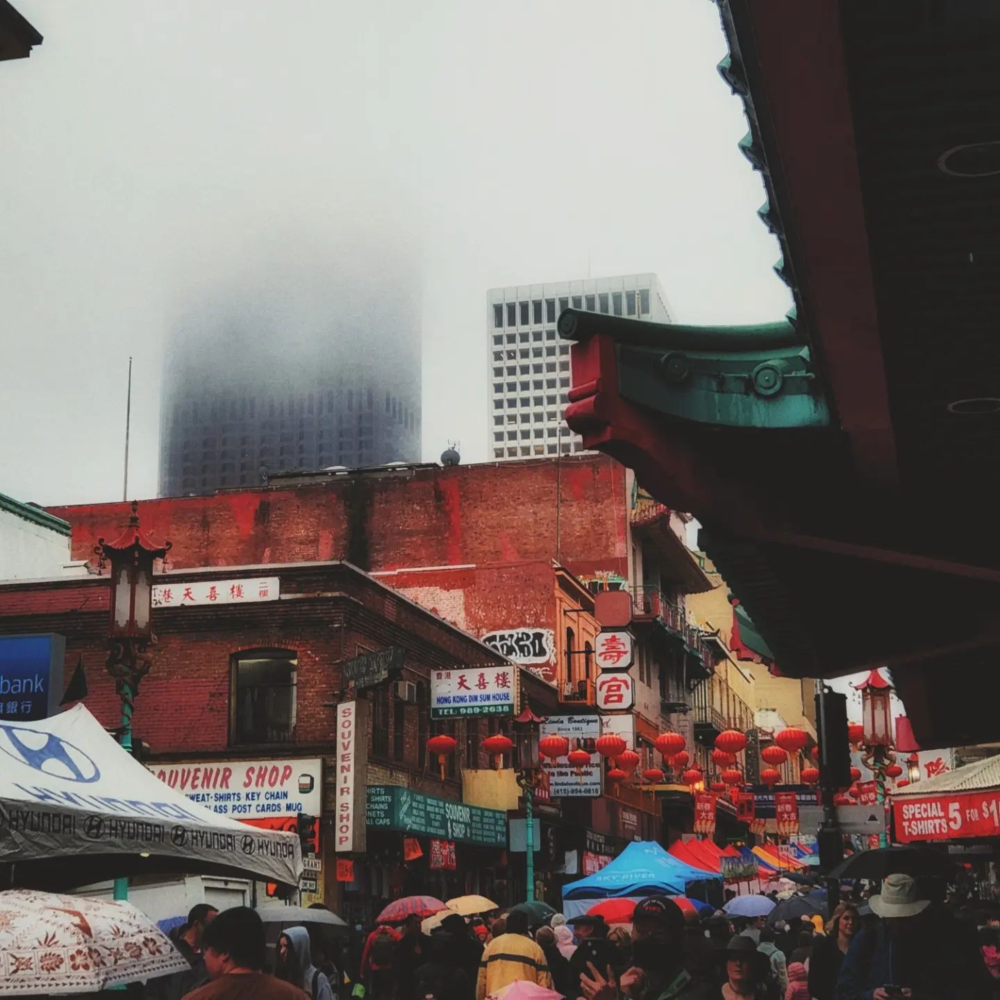
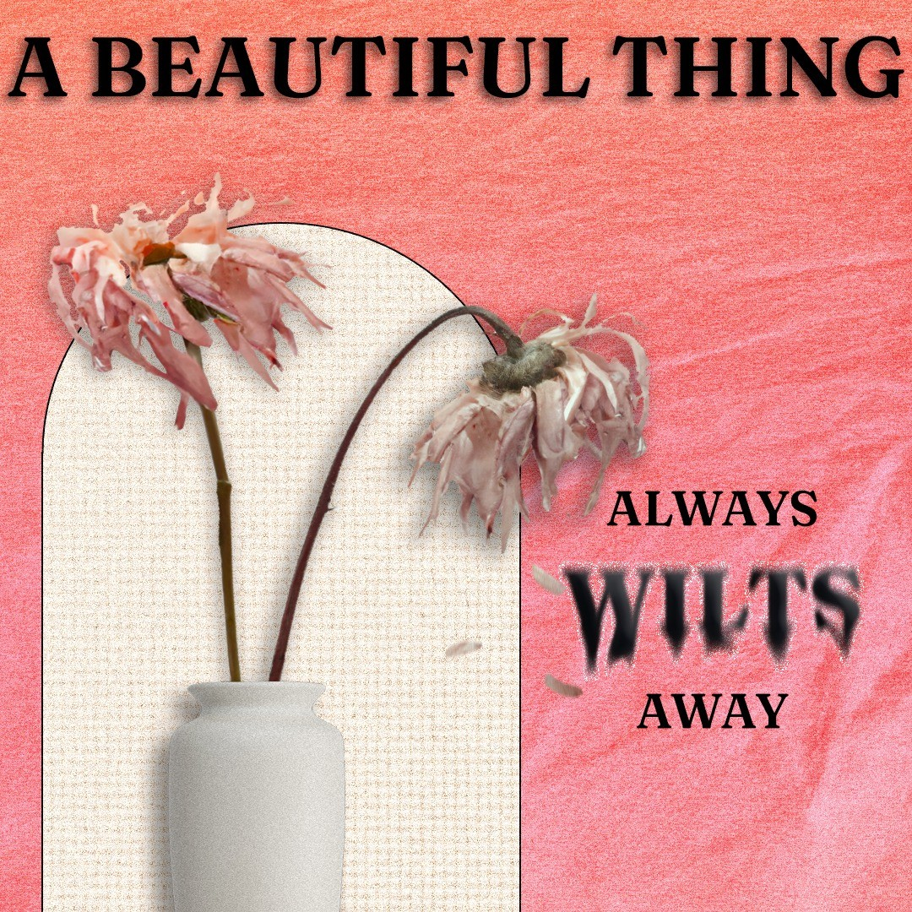

Education & Experience
Buchanan Highschool
BHS is where I did all my years of highschool education. The campus is clean and based on an outdoors
layout. There is many great teacher and people that attend BHS.
4.1 UC GPA
AP Biology 5
The Center for Advanced Research and Technology
CART is one of the best placed for career technical education courses. I enrolled in the Web Application
Development course and had a blast creating websites and learning all sorts of paragdims in the web
development world. My teachers and fellow classmates made the class very enjoyable and I would reccomend
it to anyone willing to put in the effort to learn. We used JavaScript, CSS, HTML, and Figma to create
our sites.
4.0 GPA
Chinese Club President
Under my wonderful advisor and teacher Lili Wong I have come to get involved in my culture and host
monthly meetings for the purpose of discovering Chinese culture. I had to lead the monthly meetings and
speak to everyone about a cultural event happening at the time of the meeting.
Lion Dancer
Lion dancing has become an essential past time of mine. Over the school year every week me and my team
pracitces for 2-4 hours. Then we go out and perform to spread luck to the community and to really expose
what lion dance is all about.
Accumalated over 150 hours of community service
What after 2025?
I plan to have a job in information technology, website development, or data science. I love the Bay area
and I would like to live in San Diego. My dream school is UC Irvine. If I can not get into UC Irvine I
will go to community college for two years and knock out my general education and work towards Fresno
State.
I want to create new ways for lion dancers to signal to each other what to do Such as creating an led indicator light that change colors based on what the lion head wants to do
Interests & Hobbies
Lion Dance
In my freshmen year of high school my sister told me to join BHS's lion dance team. At the time I was
just
thinking about it and in my sophmore year I decided, why not? So in the sophmore year I started lion
dancing. Every week for 2 hours we would practice in the hallway outside of the Chinese classroom. It
was
fun but also stressful there was many times where my team would plan on the spot on what to do which I
think
is just part of the trade. Quick thinking and being robust allowed me and my team to persevere and
execute
great lion dances.
Fixing Chinese Lions
My junior year of highschool I noticed that our lion needed many repairs. The eyes were drooping the jaw
was slipping and much more. I stepped up and have been the sole maintainer of the lion for about a year.
It has been fun and I like being able to create systems that make me and my teams performances a lot
easier.
Chinese Culture
When I started my first year of highschool the first club I joined was the Chinese Cultural Club at BHS.
I attended meetings and learnt about what makes China so interesting. In my sophmore year I ran for the
nex club president and won. Once my junior year started I got threw into the world of chaos that is
managing a club. I learnt a great deal about China and had a lot of fun while doing it. The biggest
event of the year for the club is the field trip to San Francisco's Chinatown. I ran for the same
position again my junior year and won again.

Programming
All my life I have been attached to the web. From tablet to laptop to phone I always had it. Computers
and what makes them work always fasinated me. Tinkering with RC cars and toys I would have was a great
deal of my childhood. As I grew older I picked up scripting from Roblox and that transfered to
JavaScript and CSS for web design.
All my work!
Design & Photography
I love nature and just seeing the world and this led to my love for biology. The way living things work is so cool! The natural formation of the things around us is just so beautiful and capturing it is one of my hobbies. This also branched off into creaing posters and creating visually interesting graphics.
